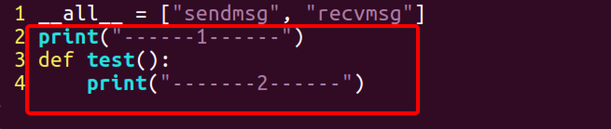
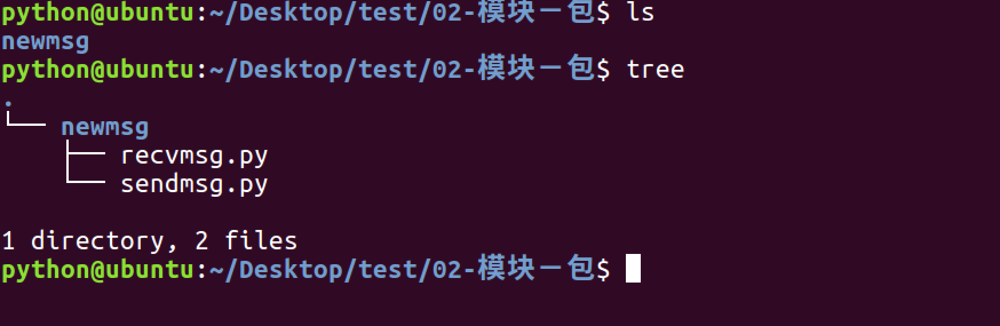
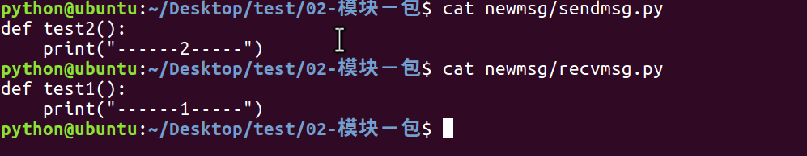
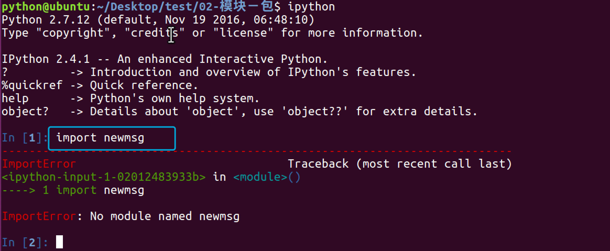
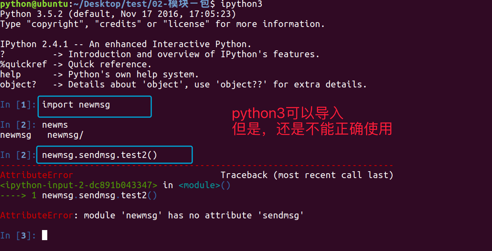
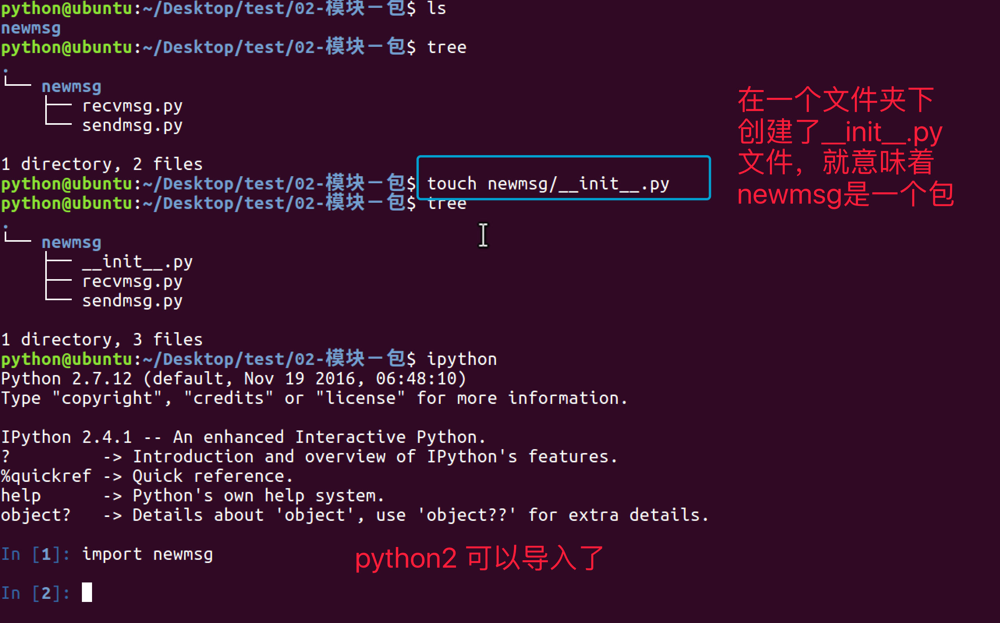
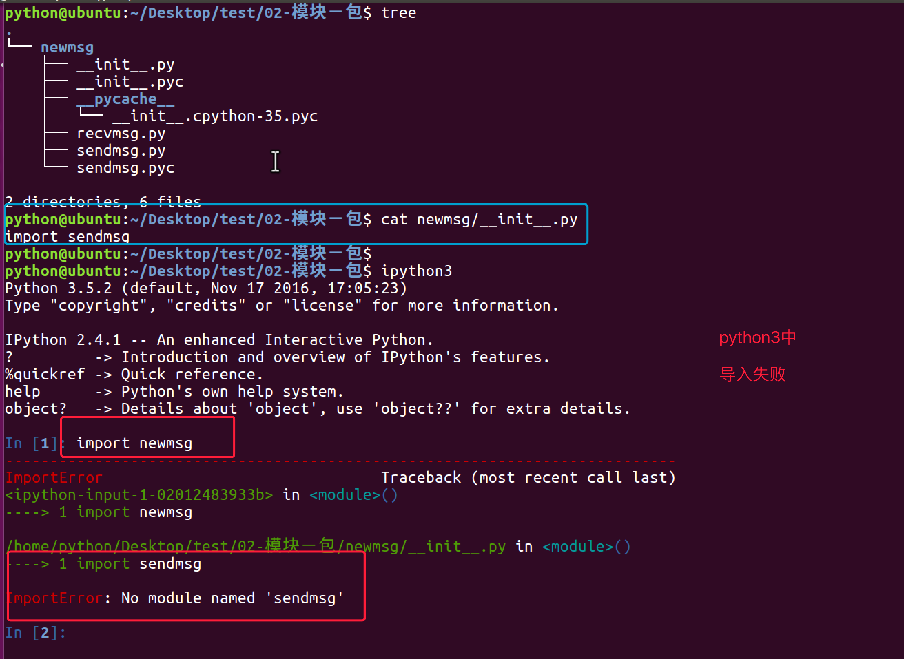
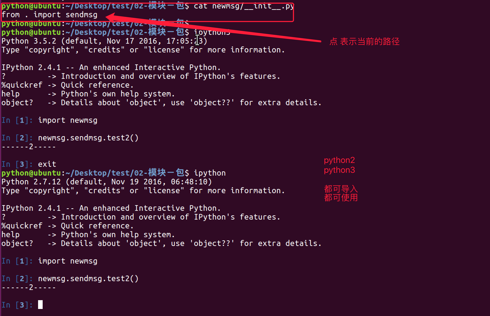

python中的包
1. 引入包
1.1 有2个模块功能有些联系
1.2 所以将其放到同一个文件夹下
1.3 使用import 文件.模块 的方式导入

1.4 使用from 文件夹 import 模块 的方式导入

1.5 在msg文件夹下创建__init__.py文件

1.6 在__init__.py文件中写入

1.7 重新使用from 文件夹 import 模块 的方式导入

总结：
- 包将有联系的模块组织在一起，即放到同一个文件夹下，并且在这个文件夹创建一个名字为
__init__.py文件，那么这个文件夹就称之为包 - 有效避免模块名称冲突问题，让应用组织结构更加清晰
2. __init__.py文件有什么用
__init__.py 控制着包的导入行为
2.1 __init__.py为空
仅仅是把这个包导入，不会导入包中的模块
2.2 __all__
在__init__.py文件中，定义一个__all__变量，它控制着 from 包名 import *时导入的模块
2.3 可以在__init__.py文件中编写内容
可以在这个文件中编写语句，当导入时，这些语句就会被执行
__init__.py文件


2.4 可以控制导入其他模块
目录结构 
sendmsg.py 和 recvmsg.py文件中的内容 
python2导入失败 
python3导入成功，但是不能使用模块 
在文件夹下创建一个文件 
python2导入成功，但不能使用

python3导入成功，但不能使用

解决python2不能使用的方式

python2的解放方式对python3不生效 
解决python3不能使用的方式 